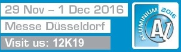

a- Sıcak hadde teknolojisi
b- 2 ton/ saat döküm kapasitesi
c- Türkiye'de ilk defa 6082, 5083, 7075 plaka, levha üretimi
d- Derin çekilebilir ürün kalitesi
e- Bünyesinde yer alan kalıp atölyesi sayesinde kalıp imalatı ve geniş kalıp seçenekleri
f- Müşteriye özel ürün seçenekleri

2009 yılında üretime başlayan Almesan; genç, dinamik ve eğitimli kadrosu ile ülkemizin nitelikli alüminyum yassı mamul üretimi konusunda faaliyetlerini her geçen gün artan hızda sürdürmektedir. Müşteri memnuniyetine odaklı sürekli gelişmeyi hedefleyen Almesan, yatırımlarını her geçen gün arttıracak şekilde sürdürmekte, alüminyum sektöründe güçlü olan pozisyonunu daha da sağlamlaştırmaktadır.
a- Ergitme fırınları : Alüminyum hammaddenin eritilmesi ve nihai siparişte istenilen kimyasal kompozisyonun hazırlanması sürecinde 40 ton kapasiteli ergitme ve 30 ton kapasiteli devirmeli tutma fırınlar kullanılmaktadır. 7 ton / saat eritme kapasiteli rejeneratif brülör yakma sistemli ergitme fırınları otomatik sıcaklık ve ortam kontrolüne sahiptir.10 ton kapasiteli şarj arabası ile ergitme fırını süratle şarj edilebilmektedir. Alüminyum rafinasyonu için gerekli olan flakslama ve gaz rafinasyon işlemleri yapabilecek ekipmanlar mevcuttur.

b- Sürekli bant döküm hattı : Ergitme fırını ve tutma fırınında elde edilen sıvı, alüminyum sıvı metali Hazelett sürekli bant döküm makinesinde sıcak levha olarak üretilir. 500 C sıcaklıkta üretilen bu levha aynı hattın devamında konumlanan Sıcak Hadde-1 ve ardına konumlanan Sıcak Hadde-2'den geçerek tabela levha veya Sıcak Haddelenmiş Rulo elde edilir. Sürekli bant döküm hattı ve Sıcak Hadde ile sıvı metalden istenilen alaşım, kalınlık ve genişlikte sürekli döküm sıcak haddelenmiş rulo üretimi ve kalın plaka alüminyum üretimi gerçekleştirilmektedir. Genişlik 300-650 mm, kalınlık 16-50 mm ,1xxx, 3xxx, 8xxx serisi ve yüksek alaşımlı 5xxx,6xxx,7xxx ,serisi alüminyum alaşımların üretimi yapılmaktadır. Sahip olduğu döküm teknolojisi ile kalın ve düşük soğuma hızlarında alüminyumun katılaşması gerçekleşmektedir. Bu sayede üretilen rulo ve levhalar da mükemmel metalurjik iç yapı , derin çekme ve sıvama işlemleri yapılabilmektedir. Yüksek döküm hızları ile günlük yüksek miktarda dökme rulo üretimi gerçekleştirilebilmektedir.

c- Sıcak haddeler : Hazelett levha bant döküm makinasından çıkan 500 C sıcaklığındaki levha sıcak hadde-1 ve sıcak Hadde -2 makinasında % 55 ezme oranında haddelenerek sıcak rulo ya da istenilen kalınlıktaki Alüminyum plaka halinde üretilir. Soğutma yağı olarak özel emülsiyon soğutma yağları kullanılmaktadır. Maksimum 4 ton ağırlığında, 650 mm genişliğinde ve 1800 mm çapında rulo üretimi yapılabilmektedir. 650 mm genişlik 50 mm kalınlık ve 3000 mm boyunda Alüminyum plakalar üretilebilmektedir.
d- Soğuk haddeler : Sıcak Haddelenmiş rulolar,soğuk hadde makinasında müşterilerimizin istediği nihai kalınlık özelliklerine göre haddelenir. 30.000 ton soğuk haddeleme kapasitesine sahip olan soğuk hadde makinası 4-Hi, en yeni teknolojik donanımlı elektronik otomasyon ve kalınlık ölçme sistemine sahiptir.1050 mm genişlik ve 1800 mm çaplı 5,5 ton ağırlığındaki rulolar soğuk haddeleme makinası ile 10 mm den 0,150 mm kalınlığa kadar haddelenebilmektedir.
e-Disk presleri : C- Tipi Otomatik presler ile 160 mm -630 mm çaplarında 0,5-10 mm kalınlıkları arasında disk preslenebilir. 200 ton gücünde Otomatik sürücü kontrollü rulo açıcı ve pres besleme sistemleri ile hassas toleranslı yüksek hızda disk üretimi gerçekleşmektedir. Aylık 1500 ton disk üretim kapasitesine sahiptir.
f- Pul presleri : Alüminyum impactekstrüzyon üretiminde kullanılan,12,7 mm -178 mm çapında, 1mm -25 mm kalınlık aralığında aylık 500 ton pul üretimi yapılabilmektedir. Yuvarlak ve dikdörtgen şekillerde delikli ve deliksiz, düz ve konkav yada müşteriye özel şekilli impactextrüzyon prosesinde çalışabilecek malzemeler üretilmektedir.Alaşım olarak saf 1xxx serisi yada yüksek alaşımlı 5xxx,6060 ,6061,6063 yada 6082 pulların (slug) üretimi de yapılmaktadır.
g-Tav fırınları : Müşterinin talep ettiği mekanik özelliklerin sağlanabilmesi için nihai ürünler tavlanarak siparişte istenilen kondisyon sağlanır. 30 Ton tavlama kapasiteli (Yıllık 20.000 Ton) 2 adet endüstriyel tav fırını bulunmaktadır.
Almesan, 5-7 Ekim tarihleri arasında İstanbul Fuar Merkezi'nde düzenlenecek Aluexpo 2017 Fuarına katılacak.
Almesan, 29 Kasım-01 Aralık tarihleri arasında Almanya Düsseldorf'ta düzenlenen Aluminium 2016 Fuarı'ndaydı.
Almesan 11-12 Kasım 2015 tarihlerinde gerçekleşen ALIMINIUM US Fuarına katılmıştır.

19 Eylül 2015 tarihinde Almesan Üretim Tesisleri, üyesi olduğu SAHA istanbul (Savunma, Havacılık ve Uzay Kümelenmesi Derneği) yönetimi tarafından ziyaret edilmiştir.

Almesan Alüminyum, İstanbul Maden ve Metaller İhracatçı Birlikleri (İMMİB) tarafından düzenlenen ‘2014 İhracatın Yıldızları’ ödül töreninde ‘Alüminyum Mutfak Eşyası’ kategorisinde ‘en çok ihracat yapan firma’ olarak ikincilik ödülüne layık görüldü.